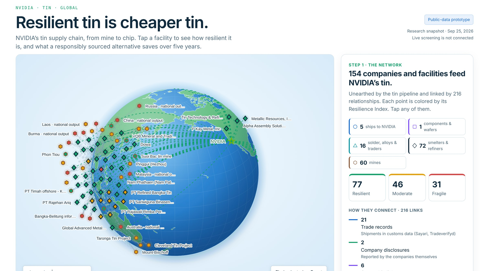
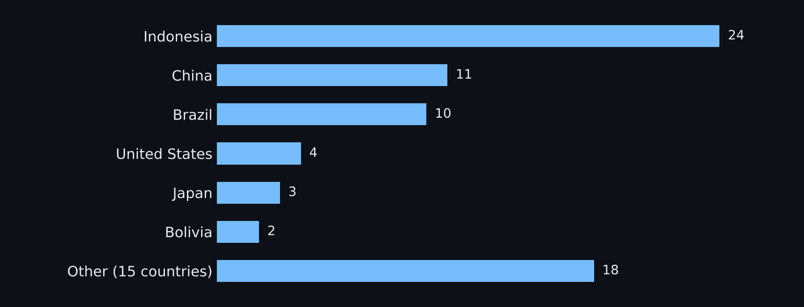
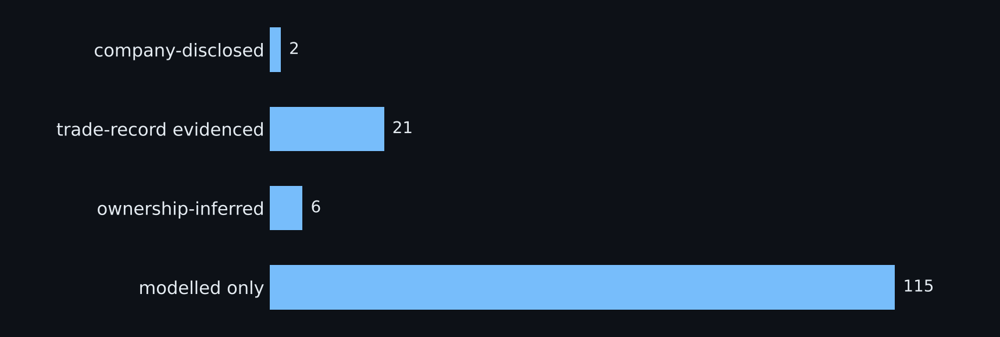
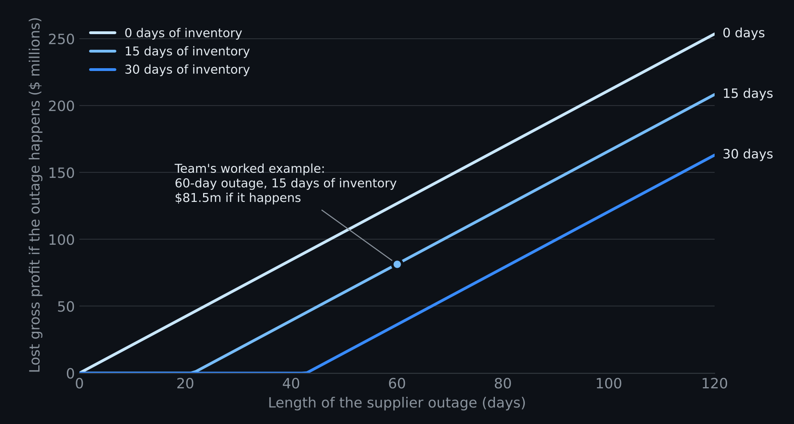

Team project · Climate Intelligence Hackathon
Tin, Supply Chains and Climate Resilience
How can critical supply chains remain both ethical and resilient in the face of climate change? That was the hackathon’s question. Our team answered it for one input: tin in NVIDIA’s supply chain.

What we built
- A map of the supply chain. An interactive globe of the smelters, mines and exporters linked to NVIDIA’s tin supply, with each relationship labelled by the evidence behind it: company-disclosed, trade-record evidenced, ownership-inferred or modelled only.
- A disruption simulator. Stop one facility, or a country’s tin output, for a number of days and see which companies are exposed.
- A loss model. A scenario-based estimate of the financial loss from a supplier outage, combining disruption probability, severity and revenue exposure.
The team used trade datasets from Sayari and Tradeverifyd and search tools from Tavily. The code is public in the Stable Supply repository.
Where the tin comes from
NVIDIA lists the tin smelters in its supply chain in its annual conflict-minerals disclosure. The team mapped all 72 of them. 24 are in Indonesia, 11 in China and 10 in Brazil.

How much of the map is observed
The map is only as good as the evidence behind each line on it. Of the 144 supply links in the team’s tin data, 2 are disclosed by the companies themselves, 21 rest on customs trade records and 6 are inferred from ownership. The other 115 are modelled: plausible routes, not observed shipments. The prototype draws those dashed, and any conclusion about a specific supplier has to start there.

My part
I helped develop the scenario-based financial loss model and assessed how inventory buffers, outage duration and alternative sourcing change potential supply-disruption losses.
The model asks a simple question: if one supplier stops, how much demand can neither backup supply nor inventory cover, and what is that worth? Backup supply covers a share of demand from the first day; inventory covers what is left until it runs out; after that, every day of outage is lost sales, minus the share recovered later.
In the team’s worked example, 1% of NVIDIA’s Data Center revenue depends on the supplier, backup covers 30% of demand and there are 15 days of inventory. A 60-day outage then costs $81.5m of gross profit if it happens, or $8.2m a year at an assumed 10% chance. With 30 days of inventory the same outage costs $36.2m; with no inventory, $126.8m. Raising backup supply to 70% cuts it to $9.1m.

These figures are recomputed from the team’s data and published formulas (repository commit 784df88, 25 September 2026); the recomputation matches the team’s own worked example. Results file (JSON).
Team and event
Madeleine Fornell, Eleonora Björnberg, Nicholas Beroud, Isayah Culbertson, Alexandre Ly and Ori Ben Yossef. We placed second of eight teams.
The Climate Intelligence Hackathon was organized by the NYU Ethical Tech CoLab, a research collaboration between Microsoft and the NYU Center for Global Affairs, with sponsors Sayari, Tradeverifyd and Tavily.
What it is and is not
This was a hackathon prototype. Its financial estimates rest on stated assumptions and are illustrations, not NVIDIA forecasts or savings realised by NVIDIA. A link in the map is not evidence of how much tin a supplier sells to NVIDIA.
The prototype runs from the public repository; a hosted demonstration is not yet available.